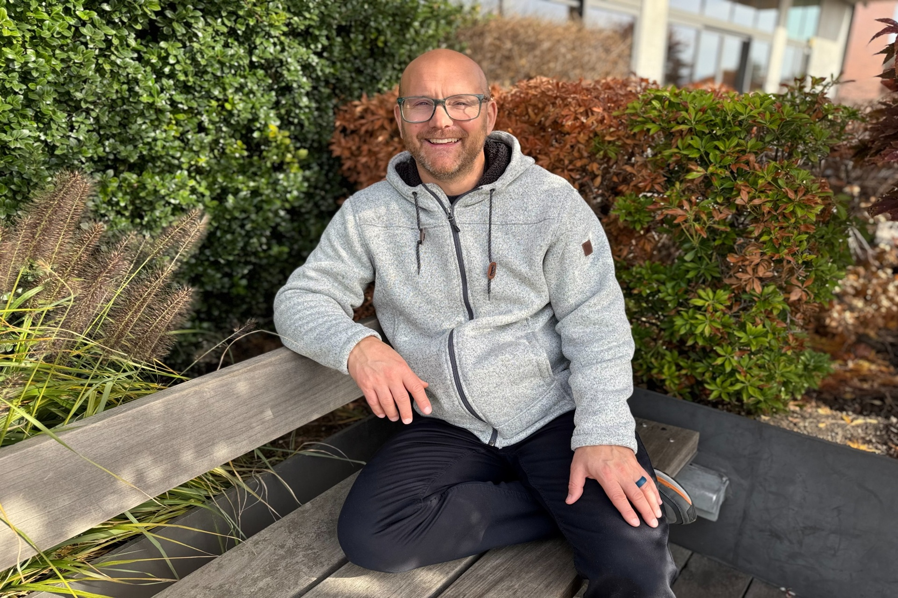

Mark Custard
I'm a QA & Automation Lead
About
QA engineer with 7+ years across fintech, insurance and entertainment — including Netflix acquisition platforms and enterprise Salesforce integrations — now sole engineer of a live production booking platform built test-first behind a 13,600-test suite running in CI on every push.
QA & Automation Engineering Lead
Test-first, CI-gated, production-owned. I hold a Bachelor of Laws in Business Law from London Metropolitan University and a Web Development certification from Actualize Coding Bootcamp. I thrive in fast-paced, cross-functional teams—partnering with developers, designers, and stakeholders to deliver high-quality software at scale.
- Degree: Bachelor of Laws (LLB)
- GitHub: github.com/markxcustard
- Phone: (360) 771-0564
- City: Ridgefield, Washington
- Experience: 7+ Years
- Specialization: QA, Automation & Full-Stack
- Email: mark.a.custard@gmail.com
- Freelance: Available
I own and maintain a 13,600+ test suite — 10,500 pytest, 2,100 Vitest and 1,000 Playwright E2E — written test-first, with mocked unit and integration layers that never touch production, E2E validation in staging, and CI gating every push and every staging→production promotion. Before that I built a Playwright framework from zero to 700+ tests on a Netflix customer acquisition platform, cutting manual regression effort by 90%, and validated Salesforce and Cosmos DB integrations across insurance quoting systems. My toolkit spans Playwright, pytest, Vitest, Selenium, Postman with ChaiJS, GitHub Actions and Azure DevOps, plus Python, TypeScript, React/Vite, FastAPI and PostgreSQL. I build the systems as well as the tests, so my testing is informed by how software actually breaks.
Resume
7+ years in Quality Assurance across fintech, insurance, ecommerce and entertainment — from Netflix acquisition platforms and enterprise Salesforce integrations to sole engineering ownership of a live production booking platform. Test-first, CI-gated, production-owned.
Summary
Mark Custard
QA engineer with 7+ years across fintech, insurance and entertainment — including Netflix acquisition platforms and enterprise Salesforce integrations — now sole engineer of a live production booking platform built test-first behind a 13,600-test suite (pytest, Vitest, Playwright) running in CI on every push. I build the systems as well as the tests, so my testing is informed by how software actually breaks.
- Ridgefield, Washington, 98642 · Remote
- (360) 771-0564
- mark.a.custard@gmail.com
Education
Web Development Certification
October 2017 - May 2018
Actualize Coding Bootcamp
Comprehensive full-stack web development training including Ruby, JavaScript, React, and modern development practices.
Bachelor of Laws (LLB) in Business Law
September 2002 - September 2006
London Metropolitan University
Grade: Very High 2:1
Degree in Business Law providing a strong foundation in analytical thinking, process analysis, and attention to detail.
Professional Experience
Lead Engineer, Full Stack & Quality
September 2025 - Present
TAG Parking, Remote
- Own and maintain a 13,600+ test suite (10,500 pytest, 2,100 Vitest, 1,000 Playwright E2E) written test-first: mocked unit and integration layers that never touch production, E2E validation in staging, and CI gating every push and every staging→production promotion
- Sole engineer for a production airport-parking platform (React/Vite, FastAPI, PostgreSQL, Railway) that has processed $208k in bookings across 1,700 trips for 1,800 customers — architecture, delivery, deployment and 24/7 operational ownership
- Built the Stripe payment stack — PaymentElement, Apple Pay, Google Pay, Link, webhook-driven fulfilment, partial refunds — with idempotent, race-condition-free booking creation; diagnosed a mobile checkout drop-off and recovered ~$5.7k/quarter in abandoned conversions
- Found and fixed a cross-night comparison defect in the occupancy engine that was silently blocking bookable weekend inventory; hardened per-night capacity limits across overnight stays with regression coverage
- Engineered an automated roster and scheduling engine: template-driven shift generation, capacity-aware assignment, driver-qualification rules, overlap detection and a live operational view of each driver's run
- Integrated live flight-board scraping (30-minute cadence, 3,700+ flights tracked) with automated delay detection that recalculates customer pickup times, SMS-alerts staff and reorders drivers' jobs into true operational sequence
- Built competitor-aware dynamic pricing and a promotions engine driving 1,000 redemptions worth $19.9k
- Shipped LLM features on the Anthropic API under adversarial security review: a customer FAQ assistant, a 2FA identity-verified booking assistant with strict data scoping, automated business reporting, and a production log sentinel that alerts only on genuine anomalies
QA Analyst — Manual | Automation
June 2024 - June 2026
BlueinGreen (Netflix contractor), Remote
- Built a Playwright automation framework from zero for the customer acquisition platform, scaling it to 700+ tests and cutting manual regression effort by 90%
- Validated performance and correctness of the primary acquisition pages supporting systems that contribute to $1.2B in subscription revenue
- Led migration testing between vendor platforms and logged the critical defects that kept the cutovers seamless
- Executed functional, regression and exploratory testing across web, iOS, Android and TV platforms
Senior QA Engineer
June 2025 - December 2025
Embrace Pet Insurance, Remote
- Validated Salesforce CRM functionality and data models through the integration of quote-creation tools across multiple brands
- Ran integration testing across Salesforce and Cosmos DB, verifying data synchronisation between insurance systems
- Managed 400+ test cases in Testmo and automated production releases via Azure DevOps CI/CD
- Executed manual and A/B testing across customer-facing quoting journeys
Professional Experience
QA Analyst
March 2022 - May 2024
Stake (Fintech), Remote
- API testing with Postman and ChaiJS to validate financial transaction integrity and cross-system data synchronisation
- Automated data-accuracy checks in SQL and Python; integration testing with mocked data for mobile business-process automation
- Cut app crash rates 20% and improved data accuracy 15% via BigQuery-based monitoring
- Led test planning and execution across functional, integration and regression cycles on Android and iOS
QA Engineer
July 2021 - May 2022
CSC Generation, Merrillville, IN
- Automated validation for new feature integrations
- Built the regression test cases behind improved defect throughput
- Performed cross-browser and mobile testing across desktop and mobile platforms
Software QA Analyst
April 2021 - July 2021
Kemper Insurance, Downers Grove, IL
- Functional, integration and regression testing across insurance applications with rigorous defect reporting
- Developed and continuously updated test plans ensuring comprehensive coverage
Software QA Analyst
January 2020 - April 2021
American Access Casualty Company, Downers Grove, IL
- Authored integration test scripts and automated business-requirement validation, improving validation efficiency 25%
- Conducted compatibility tests across various browsers and versions
- Led initiatives to enhance unit testing coverage and automation
Junior Application Developer
October 2018 - January 2020
American Access Casualty Company, Downers Grove, IL
- Built and validated web applications across the production lifecycle
- Analysed and corrected data-model and reliability defects, providing timely updates
- Worked directly with customers to develop new features
Portfolio
Personal projects across test automation, BDD, data processing and database work — each one built test-first, with CI running the suite on every push.
- All
- Automation
- BDD
- Data
- Database
Personal Website Automation
167 tests167 Selenium tests across every section, with page objects, cross-browser CI and a nightly production run.
BDD Personal Website
89 scenarios89 Gherkin scenarios and 299 steps in Behave, with driver lifecycle handled in environment hooks.
Cypress Portfolio Tests
163 tests163 Cypress tests across 10 specs in about 30 seconds, with expected content kept in one fixture.
Pandas Filtering Films
54 testsSeven composable filters, each a pure function that never mutates its input, behind 54 tests.
Films CRUD
60 testsSQLAlchemy CRUD over SQLite behind an argparse CLI, with 60 tests on in-memory databases.
Technical Skills
Comprehensive technical expertise across testing tools, programming languages, and QA methodologies
Programming Languages
Python, JavaScript, TypeScript, SQL, Ruby, ChaiJS
Testing Tools
Playwright, pytest, pytest-asyncio, Vitest, unittest.mock, Selenium, Postman, BrowserStack, Testmo, TestRail, Rainforest QA, BigQuery, Xray for Jira, Zephyr for Jira
Types of Testing
Unit, Integration, Functional, Regression, Exploratory, Smoke, Automation, Sanity, Spot Checking, A/B Testing, Cross-Platform, Cross-Browser, Mobile Web, API Testing, Webhook Verification
Test Practices & Methodologies
TDD, Test-Pyramid & Coverage Design, Risk-Based Prioritisation, Mock Boundaries, Flake Triage, Regression-Suite Ownership, Release Sign-Off, Root Cause Analysis, BDD, Page Object Model (POM), ETL Validation
Frameworks & Libraries
React, React Router, Vite, VueJS, FastAPI, SQLAlchemy, Pandas, Gherkin, Cucumber, Behave
Project Management & Agile
Jira, Azure DevOps, Scrum, Agile, Sprint Planning, Sprint Retrospectives, Confluence, ClickUp, Notion, Test Documentation
Version Control & CI/CD
Git, GitHub, Bitbucket, GitHub Actions, Azure DevOps, CI/CD Pipelines, Staging→Production Promotion Gates, Deployment Pipelines
Cloud & Databases
Railway, AWS, Heroku, Netlify, PostgreSQL, Salesforce, Cosmos DB, BigQuery, Zapier, Environment & Secret Management
Developer Tools & Integrations
Chrome DevTools, Browser Debugging Tools, Stripe, SendGrid, Anthropic API, Alembic (migrations), Log-Based Monitoring & Alerting, Incident Triage, Defect Management
Platform Testing
Web, iOS, Android, TV Platforms, Desktop, Cross-Browser (Chrome, Firefox, Safari, Edge), Mobile Testing
Skills
Core expertise in test automation, test strategy and CI-gated delivery — backed by hands-on full-stack engineering
Testimonials
What colleagues and clients say about working with me
Contact
Get in touch to discuss QA projects, testing opportunities, or collaboration
Address
Ridgefield, Washington, 98642
Call Me
🇺🇸 +1 (360) 771-0564
🇬🇧 +44 7441 343276
Email Me
mark.a.custard@gmail.com